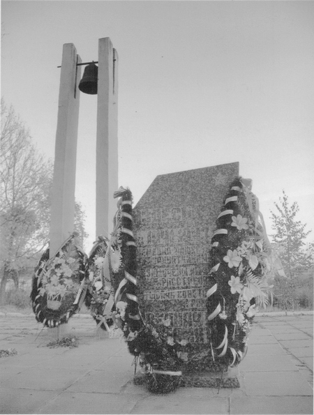

ВЯЗЕМСКАЯ ТРАГЕДИЯ
(Пересыльный лагерь дулаг № 184)
Одной из самых страшных трагедий Великой Отечественной стала Вяземская катастрофа 1941 г. По своим масштабам она сравнима лишь с разгромом в первые дни войны войск Западного фронта и Киевским котлом.
В октябре 41-го года, нанеся мощный удар на Вяземском направлении, немцам удалось прорвать наш фронт. В окружение под Вязьмой попали 4 армейских управления, 37 дивизий, 9 танковых бригад, 31 артиллерийский полк РГК. Только безвозвратные потери Красной Армии превысили 380 тыс. человек. 14 октября немцы объявили: «Враг, окруженный к западу от Вязьмы, полностью уничтожен... Количество военнослужащих, взятых в плен во время этой грандиозной битвы, превышает 500 тыс. и увеличивается с каждым часом». (ЦАМО РФ, ф. 500, оп. 12462, д. 757, оперсводки).
После Вяземской катастрофы судьба Москвы буквально висела на волоске. Лишь ценой колоссального напряжения сил удалось восстановить фронт и не допустить падения столицы. И нельзя забывать, что воссозданию обороны на Западном стратегическом направлении способствовали героизм и мужество войск, оказавшихся в окружении под Брянском и Вязьмой, надолго приковавших к себе десятки немецких дивизий. Для отражения их попыток прорыва из окружения и последующей ликвидации котлов вражескому командованию на первых порах пришлось привлечь 48 дивизий из 74 – почти две трети группы армий «Центр».
Позднее, уже после войны Г.К. Жуков так оценил значение боев в районе Вязьмы: «Благодаря упорству и стойкости, которые проявили наши войска, дравшиеся в окружении в районе Вязьмы, главные силы противника были задержаны в самые критические для нас дни. Мы выиграли драгоценное время для обороны на Можайской линии. Кровь и жертвы, понесенные воинами окруженной группировки, не оказались напрасными. Подвиг героически сражавшихся под Вязьмой советских воинов, внесших великий вклад в общее дело защиты Москвы ждет своего описания».
В октябре 41 года в Вязьме немцы создали пересыльный лагерь дулаг № 184, который просуществовал до марта 1943 г. – момента освобождения города. Среди многочисленных пленных из разных уголков бывшего Советского Союза, добровольцев-ополченцев из Москвы, погибших в этом лагере, были и уроженцы Калининской области, многие из которых до сих пор числятся пропавшими без вести.
Пленные содержались в невыносимых условиях. Поначалу вообще под открытым небом на полях и в оврагах недалеко от города. Часто те, кто ложился спать, уже не вставали – замерзали. Затем для них использовали территорию недостроенного мясокомбината. Однако далеко не все могли разместиться в его корпусах и подвалах. Для подавляющего большинства крышей над головой оставалось небо. Территория дулага был обнесена забором из колючей проволоки. По углам стояли пулеметные вышки.
В лагере была страшная антисанитария, потому многие болели дизентерией. Туалетом служила открытая траншея, откуда постоянно исходил зловонный запах. Немецкие солдаты использовали это место как полигон для стрельбы по живым мишеням.
Кормили пленных отвратительно. Нередко для приготовления пищи немцы использовали павших животных, в том числе собак и кошек. Хлеб не выдавали до мая 1942 г. Зимой пленных запрягали в сани и использовали в качестве тягловой силы. Для устрашения с колючей проволоки неделями не снимали расстрелянных недовольных и пытавшихся бежать. Ночью лагерь содрогался от душераздирающих стонов пытаемых и выстрелов.
В лагере было три лазарета. Ими служили полуразрушенные брошенные жителями дома на окраине города и корпуса маслозавода. В них было темно и сыро. Зачастую раненые лежали на голом полу. Вшивость была неимоверная. Солдаты помещались в лазарет умирающими, о чем свидетельствовали такие записи как «доставлен в бессознательном состоянии», «доставлен в состоянии агонии».
Из-за таких чудовищных условий содержания очень многие умирали. По некоторым данным, в день около 300 человек. На территории дулага было вырыто 40 рвов размером 4 на 100 метров, в которых захоронено от 70 до 80 тыс. погибших в дулаге военнопленных и гражданских лиц. Сегодня на месте страшной гибели защитников Отечества гаражи, огороды, мясокомбинат.
В марте этого года в Фонд «Жить и Помнить» пришло письмо из международной ассоциации общественных поисковых объединений «Народная память о защитниках Отечества». Цель этой общественной организации - восстановить имена советских солдат и офицеров, погибших в дулаге № 184 и достойно увековечить их память. С осени 2008 года она ведет поиск сведений о погибших в дулаге и разыскивает их родственников. Полного списка советских воинов, погибших в этом лагере нет. В архивах удалось разыскать только списки умерших в так называемых лазаретах дулага № 184 г. за период с января. по октябрь 1942 г.Эти списки включают в себя имена 5422 человек, из них захоронены безымянными -1239.
В процессе исследовательской работы выяснилось, что составители Книг Памяти из многих регионов РФ, в том числе Тверской области, уже работали в ЦАМО РФ с этими списками, увековечивая имена своих земляков в региональных изданиях. Однако увековечены они по разному: как умершие от ран без указания места смерти и захоронения, как умершие в плену без даты смерти. Многие из погибших увековечены как пропавшие без вести.
Нередко поиск осложняется отсутствием фамилий или имен и отчеств, искажением фамилий, неправильно указанной датой рождения, номера воинской части. В списках погибших в лазаретах некоторые фамилии встречаются по нескольку раз, что объясняется перемещением людей из одного лазарета в другой в связи с ухудшением состояния здоровья пленных.
За сравнительно короткое время ассоциации «Народная Память» удалось установить связь с десятками семей погибших, которым ничего не было известно о месте гибели своих родных. Для них организовывались поездки в Вязьму. Создан оргкомитет «Вяземский мемориал». В апреле 2009 года члены его направили в Российский оргкомитет «Победа» на имя Президента Д. Медведева просьбу о создании на месте лагеря мемориального комплекса. В том же году администрация Вяземского городского поселения территории по ул. Репина, где находился Дулаг № 184, придала статус воинского захоронения. Оргкомитет «Вяземский мемориал» добивается, в частности, эксгумации останков погибших воинов и захоронения их на территории будущего комплекса, поименного увековечивания имен погибших на мемориальных плитах. Открытие комплекса предполагается приурочить к 70-летию Московской битвы, а возможно к самим Вяземским событиям октября 41-го.
Сегодня мы публикуем имена наших земляков военнопленных и гражданских лиц, погибших в дулаге 184. Эти имена нам удалось восстановить по лазаретным спискам.
Надеемся, что откликнутся их родственники, которые своим участием помогут достойно увековечить память о своих близких на многострадальной вяземской земле. |